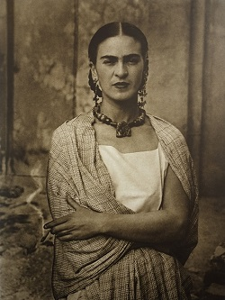

Frida Kahlo
(1907-1954)

"I paint self-portraits because I am so often alone, because I am the person I know best.”
-Frida Kahlo
-Frida Kahlo
Frida Kahlo de Rivera is considered as one of the Mexico's greatest artists who painted many portraits, self-portraits and works inspired by the nature and artifacts of Mexico. She was born in 6 July 1907 in Mexico City from a German decent father and a mestiza mother.
Frida became disabled by folio when she was a child and was bedridden for nine months. At the age of eighteen, a tragic accident put her in a serious injury. During her recovery, she started painting and finished her first self portrate a year later.
For more informationclick here